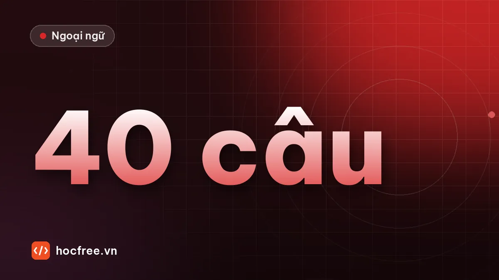

Luyện tập 40 câu ngữ pháp HSK 3 có giải thích
40 câu tự biên soạn về bổ ngữ kết quả, xu hướng, khả năng, câu 把, 被, 是…的 và liên từ: chọn, sửa câu sai, dịch, kèm giải thích.

Học xong bài này, bạn sẽ
- Ôn toàn bộ ngữ pháp HSK 3
- Tìm điểm còn yếu trước khi luyện kỹ năng
- Cập nhật sổ lỗi
Nên học trước: Cấu trúc hay gặp: 越来越, 除了, 又…又
Nội dung bài viết
Bài thực hành tổng kết toàn bộ ngữ pháp HSK 3: bổ ngữ kết quả, xu hướng, khả năng, câu 把, câu 被, 是…的, liên từ và các cấu trúc hay gặp. 40 câu do HọcFree tự biên soạn. Làm trong 35 phút, không tra cứu. Những câu nào có nhiều cách đúng, đáp án sẽ ghi rõ.
Phần A. Chọn đáp án đúng (20 câu)
1. 老师说的话我都听___了。 A. 见 B. 懂 C. 完
2. 我找了半天，还没找___。 A. 到 B. 好 C. 懂
3. 请进___！ (người nói ở trong phòng) A. 去 B. 来 C. 过
4. 他回___去了。 A. 家 B. 了 C. 到
5. 字太小了，我看不___。 A. 清楚 B. 好 C. 完
6. 现在去机场，还来得___吗？ A. 到 B. 及 C. 好
7. 请___文件放在桌子上。 A. 被 B. 把 C. 给
8. 我___把报告写完。 A. 不 B. 没 C. 没有了
9. 我的自行车___人骑走了。 A. 把 B. 让 C. 给我
10. 你是___来越南的？ A. 什么时候 B. 了 C. 吗
11. 我不是坐飞机来___。 A. 了 B. 的 C. 过
12. ___今天很忙，但是他还是来了。 A. 因为 B. 虽然 C. 如果
13. 如果明天下雨，我们___不去了。 A. 都 B. 就 C. 才
14. 他不但会说汉语，___会说英语。 A. 但是 B. 而且 C. 所以
15. 我一到家___给你打电话。 A. 就 B. 才 C. 再
16. 天气越来越___了。 A. 很热 B. 热 C. 非常热
17. 除了小王，大家___来了。 A. 还 B. 都 C. 也还
18. 这家饭馆的菜___好吃___便宜。 A. 一边…一边 B. 又…又 C. 越…越
19. 你看___很累，休息一下吧。 A. 起来 B. 上去 C. 出来
20. 这儿___抽烟。 (cấm) A. 抽不了 B. 不能 C. 抽不到
Phần B. Sửa câu sai (10 câu)
21. 我把这本书看。
22. 我不听懂他的话。
23. 他走进来办公室。
24. 我把他认识。
25. 我是去年来了的。
26. 如果你忙，就你别来了。
27. 我的手机让偷了。
28. 我放手机在桌子上了。
29. 我不能听懂这个歌。
30. 杯子被弟弟没打破。
Phần C. Dịch sang tiếng Trung (10 câu)
31. Tôi chưa viết xong báo cáo.
32. Anh ấy chạy ra ngoài rồi.
33. Nhiều món quá, tôi ăn không hết.
34. Đặt tài liệu này lên bàn giám đốc.
35. Ví tiền của tôi bị lấy trộm rồi.
36. Anh đến bằng gì? – Tôi đi taxi đến.
37. Vì tắc đường nên tôi đến muộn.
38. Vừa tan làm là anh ấy về nhà.
39. Ngoài tiếng Trung, tôi còn biết tiếng Anh.
40. Tiếng Trung càng học càng thú vị.
Đáp án và giải thích
Xem đáp án 40 câu
- B – nghe hiểu: 听懂.
- A – tìm thấy: 找到.
- B – hướng về phía người nói.
- A – tân ngữ nơi chốn trước 去: 回家去.
- A – 看不清楚.
- B – 来得及 (kịp).
- B – V + 在 + nơi chốn cần câu 把.
- B – phủ định đặt trước 把: 没把.
- B – 让 + người làm + V: bị động khẩu ngữ.
- A – 是…的 hỏi thời gian.
- B – 不是…的.
- B – nhượng bộ, đi với 但是.
- B – 如果…就, 就 sau chủ ngữ.
- B – 不但…而且.
- A – 一…就.
- B – không dùng 很, 非常 sau 越来越.
- B – loại trừ: 除了…都.
- B – hai tính chất: 又…又.
- A – 看起来: trông có vẻ.
- B – cấm đoán dùng 不能.
- 我把这本书看完了。(động từ cần thành phần sau)
- 我没听懂他的话。/ 我听不懂他的话。
- 他走进办公室来了。
- 我认识他。(认识 không dùng với 把)
- 我是去年来的。
- 如果你忙，你就别来了。
- 我的手机让人偷了。/ 我的手机被偷了。
- 我把手机放在桌子上了。
- 我听不懂这首歌。(năng lực đạt kết quả dùng bổ ngữ khả năng; lượng từ của 歌 là 首)
- 杯子没被弟弟打破。
- 我还没写完报告。/ 报告我还没写完。
- 他跑出去了。
- 菜太多了，我吃不完。
- 把这个文件放在经理的桌子上。
- 我的钱包被偷了。
- 你是怎么来的？——我是坐出租车来的。
- 因为堵车，所以我迟到了。
- 他一下班就回家了。
- 除了汉语以外，我还会说英语。
- 汉语越学越有意思。
Chấm điểm
| Nhóm ngữ pháp | Câu | Bài gốc |
|---|---|---|
| Bổ ngữ kết quả | 1, 2, 31 | Bổ ngữ kết quả |
| Bổ ngữ xu hướng | 3, 4, 19, 23, 32 | Bổ ngữ xu hướng |
| Bổ ngữ khả năng | 5, 6, 20, 22, 29, 33 | Bổ ngữ khả năng |
| Câu 把 | 7, 8, 21, 24, 28, 34 | Câu chữ 把 |
| Câu 被 | 9, 27, 30, 35 | Câu bị động 被 |
| 是…的 | 10, 11, 25, 36 | 是…的 |
| Liên từ | 12, 13, 14, 15, 26, 37, 38 | Câu phức |
| Cấu trúc hay gặp | 16, 17, 18, 39, 40 | Cấu trúc HSK 3 |
- 34–40 câu đúng: sẵn sàng cho chặng kỹ năng.
- 28–33: đạt. Nhóm nào sai từ 2 câu thì đọc lại bài gốc, viết 2 câu mới đúng cho mỗi câu sai và đưa vào Anki.
- Dưới 28: dành 2–3 ngày ôn theo bảng. Ngữ pháp HSK 3 là nền của cả đề thi, đừng vội sang chặng sau.
Bài tiếp theo mở đầu chặng kỹ năng: nghe hiểu: chiến thuật và cách luyện.
Bài tập thực hành
- Làm 40 câu trong 35 phút, không tra cứu, chấm theo đáp án.
- Câu sai nào quay về bài gốc, viết 2 câu mới đúng và đưa vào Anki.
Làm xong bài tập mới chuyển sang bài tiếp theo: đọc to, tự viết chữ Hán và tự chấm đáp án là cách duy nhất để nhớ lâu.